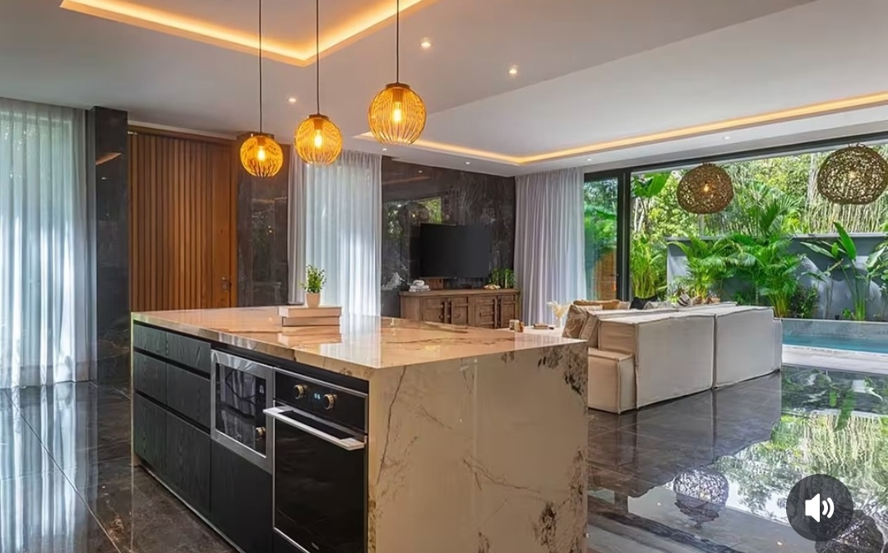

El Contexto: Diseño de Lujo con Raíces Tropicales
Las tendencias de cocinas de lujo en 2026 están fuertemente influenciadas por una paradoja: el mundo mira hacia lo natural, lo artesanal y lo sostenible, mientras que la tecnología de materiales avanza hacia lo invisible, lo funcional y lo permanente. En la Riviera Maya, esta paradoja se resuelve de forma natural: la selva, la piedra, la madera y la luz del Caribe son el backdrop perfecto para cocinas que celebran los materiales nobles.
Lo que ves en las revistas europeas o en Dezeen es la referencia. Lo que implementamos aquí en Ka'ax Creación es esa misma estética, adaptada a un entorno donde la humedad, el calor y la luz intensa dictan elecciones específicas de material y color.

"Los clientes de Tulum y Playa del Carmen nos piden cada vez más cocinas que 'hablen' con el entorno: piedra local, madera natural, tonos tierra y verde. El lujo discreto ha llegado al Caribe."
— Raphaël, Ka'ax CreaciónLas 6 Grandes Tendencias de 2026
Verde Selva y Tonos Tierra: La Paleta del Caribe
El verde oscuro tipo "forest green" o "jungle green" domina el diseño de cocinas premium en 2026. En el contexto de la Riviera Maya, este color conecta directamente con la selva circundante y la paleta del cenote. Puertas de roble lacado en verde oscuro con herrajes de latón envejecido crean un resultado visual extraordinario. Los tonos tierra —arcilla, terracota suave, beis cálido— complementan esta paleta y funcionan especialmente bien con la luz natural intensa del Caribe.
Roble Ahumado y Maderas con Carácter
El roble ahumado (smoked oak) es LA tendencia de madera del momento en el diseño europeo de alta gama. El proceso de ahumado oscurece la madera de forma uniforme, acentúa el veteado y crea una profundidad visual que el roble natural no tiene. El resultado es una madera con carácter: sofisticada, cálida, contemporánea. En la Riviera Maya, contrasta perfectamente con el blanco del mármol y la piedra local. También tendencia: el cedro europeo tratado con aceite, que conserva su tono dorado natural.
Cocinas sin Manija — Apertura Push-to-Open
La estética "handleless" domina el diseño de cocinas premium. Las puertas y cajones sin manija visible, que se abren por presión (push-to-open) o con bisagras de apertura integrada, crean una superficie completamente limpia y continua. En Playa del Carmen y Tulum, donde los espacios de cocina están frecuentemente integrados en open plan con la sala, esta estética minimalista funciona perfectamente. También facilita la limpieza —importante en un clima tropical— y elimina los puntos de acumulación de suciedad.
Piedra Natural y Piedra Volcánica en Encimeras
El mármol sigue siendo el estándar de lujo, pero en 2026 aparecen nuevos materiales nobles: la piedra volcánica (basalto) en encimeras mate, el cuarcita con vetas dramáticas, y la piedra de Yucatán —la cantera local— que conecta directamente con la tradición constructiva maya. La piedra de Yucatán en tono crema o gris, trabajada en secciones gruesas de 3–4 cm, crea una presencia visual masiva y auténtica. Para exteriores y cocinas de terraza, el basalto es especialmente resistente al calor tropical.
Integración Total: La Cocina Invisible
La tendencia de integrar completamente los electrodomésticos —nevera, lavavajillas, microondas— detrás de puertas de madera o lacadas que siguen la línea del mobiliario se consolida en 2026. El resultado: una cocina que desde la sala parece un mueble más. Los paneles de madera o laca cubren completamente los aparatos, y solo los tiradores de las puertas de los electrodomésticos son visibles (o no, con las versiones fully integrated). En open plan, esta integración es fundamental para mantener la coherencia visual del espacio.
Iluminación Funcional y Ambiental Integrada
La iluminación de cocinas en 2026 ya no es una decisión posterior al mobiliario: es parte del diseño desde el primer boceto. LED integrado bajo los muebles altos (iluminación de trabajo), perfiles de luz indirecta en los remates superiores (ambiente), y puntos de luz en el interior de los módulos o cajones de cristal. En el Caribe, donde los exteriores se funden con los interiores, la iluminación crea zonas distintas y permite disfrutar de la cocina de noche con una atmósfera completamente diferente a la del día.
La Paleta de Colores del Año en la Riviera Maya
Lo que No Recomendamos en 2026
Las tendencias también tienen un reverso: lo que se está quedando atrás. En 2026, en el mercado de lujo de la Riviera Maya, estamos viendo el final de:
- El blanco total sin contraste — Las cocinas completamente blancas sin ningún elemento de calidez se perciben como desactualizadas y frías en 2026. El blanco sigue siendo base, pero con contraste.
- Las cocinas de aspecto industrial excesivo — El acero, el concreto industrial y el look de restaurante ya no es la señal de lujo que fue en 2015–2020. Se busca más calidez.
- Los frentes de alto brillo — El acabado espejo muy brillante acumula huellas, es difícil de mantener y visualmente ya se percibe como anticuado. El acabado satinado o mate es la opción dominante.

Preguntas Frecuentes
Las tendencias de diseño de alta gama son globales, pero requieren adaptación de materiales y colores al entorno local. En Ka'ax Creación llevamos las tendencias europeas al contexto tropical: misma estética, materiales adaptados al calor y la humedad de la Riviera Maya.
Los verdes oscuros tipo bosque tienen una base muy sólida en el diseño de interiores — es un color que conecta con la naturaleza y no tiene la carga efímera de los colores tendencia más agresivos. En el contexto de la Riviera Maya, con la selva como backdrop, tiene además una coherencia estética que lo hace especialmente duradero.
Absolutamente sí, y es una de las combinaciones más elegantes del diseño contemporáneo. Muebles altos lacados en color (verde, negro, blanco cálido) + isla o muebles bajos en madera natural o ahumada es una de las combinaciones que más pedimos fabricar en 2026. El contraste entre el material natural y el lacado crea profundidad y sofisticación.